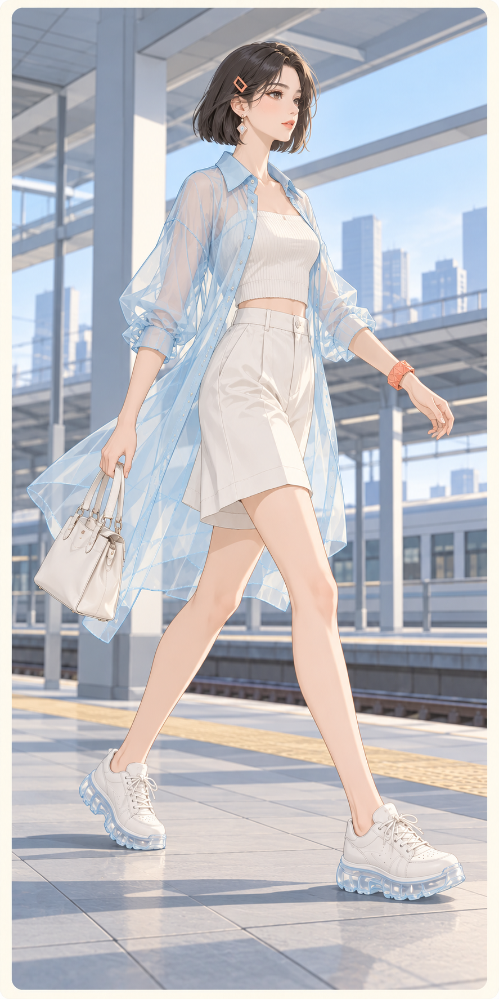
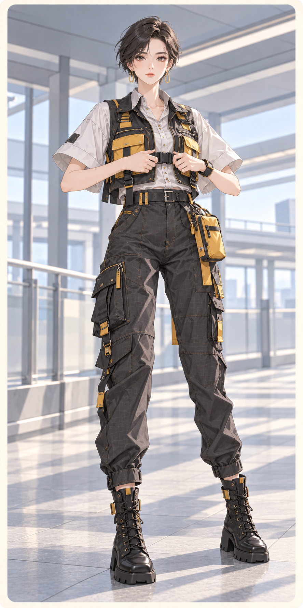
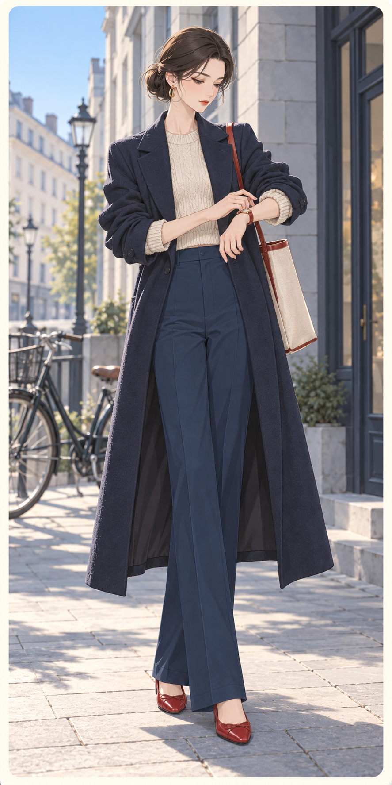
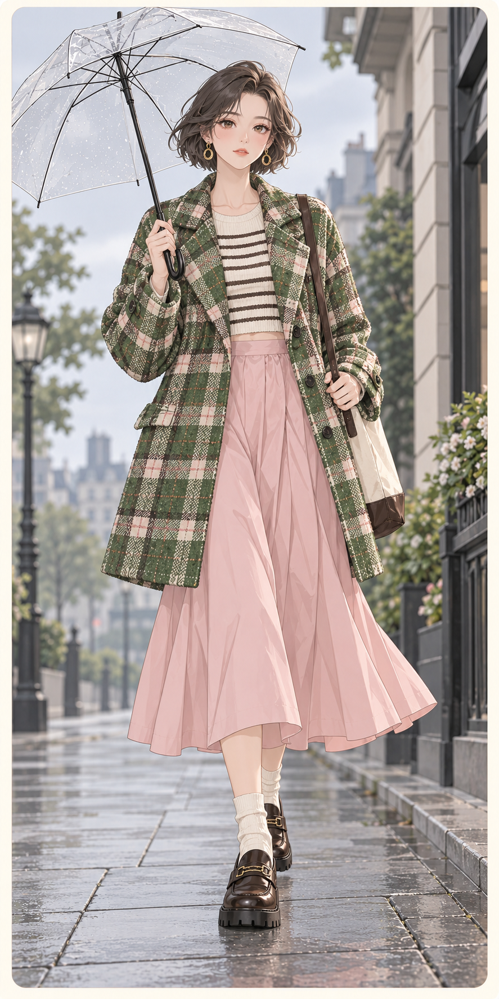
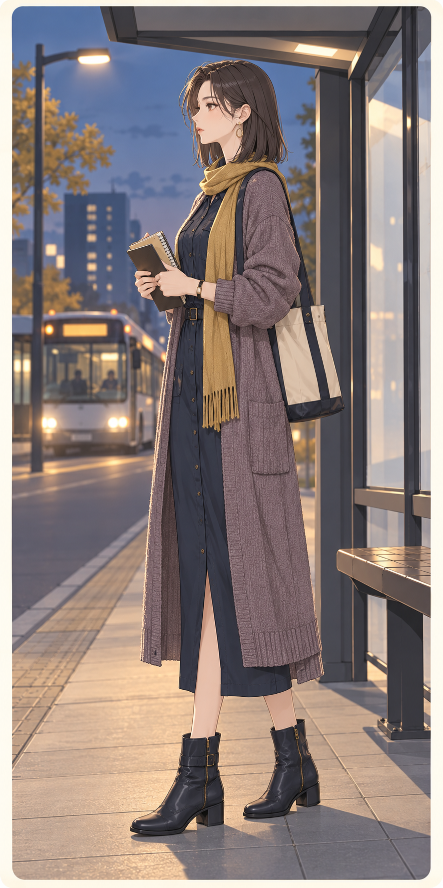

C04-A薄膜晨光Membrane Morning动作：侧面快步进站、自然摆臂发型：侧分齐下巴短直发＋珊瑚发夹半透明长罩衫／窄背心／宽短裤；外长内短冰蓝 云白 珊瑚薄膜感欧根纱不等于塑料，内搭棉哑光
C04-B模块穿行Modular Transit动作：正面平视调整口袋扣件发型：利落侧分短精灵头短机能马甲／宽肩衬衫／锥形工装裤石墨 工业黄 浅灰棉尼龙颗粒、哑金属扣与轻微涂层差异
C05-A精确的早晨A Precise Morning动作：低头核对手表的直立站姿发型：光洁低盘髻长直大衣／短针织／直裤；细长而不紧墨蓝 燕麦 番茄细羊毛直面、干爽棉与小面积红色皮
C05-B雨前大格纹Checks Before Rain动作：行走中单手举伞、正视前方发型：耳上短卷发盒型大外套／中长裙；大色块与留白青草绿 淡粉 棕黑粗格毛呢与平整轻棉，不统一磨成柔光
C06-C夜课归途After the Evening Class动作：公交站侧面站立、双手合上笔记发型：及肩直发与斜刘海衬衫式直裙／长针织层；简洁纵线墨蓝 灰紫 芥黄干爽斜纹、细绒针织与平皮